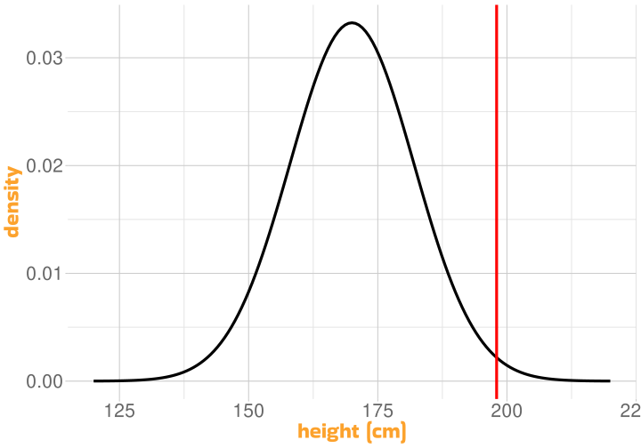
Testing Statistical Hypotheses
Univariate Statistics and Methodology using R
Martin Corley
Psychology, PPLS
University of Edinburgh
Probability and the Normal Curve
More about Height
imagine that we know all about the heights of a population
mean height (\(\bar{x}\)) is 170; standard deviation (\(\sigma\)) is 12
How Unusual is Casper?

in his socks, Casper is 198 cm tall
how likely would we be to find someone Casper’s height in our population?
How Unusual is Casper (Take 2)?
in his socks, Casper is 198 cm tall
how likely would we be to find someone Casper’s height or more in our population?
the area is 0.0098
so the probability of finding someone in our population of Casper’s height or greater is .0098 (or, \(p=.0098\) )
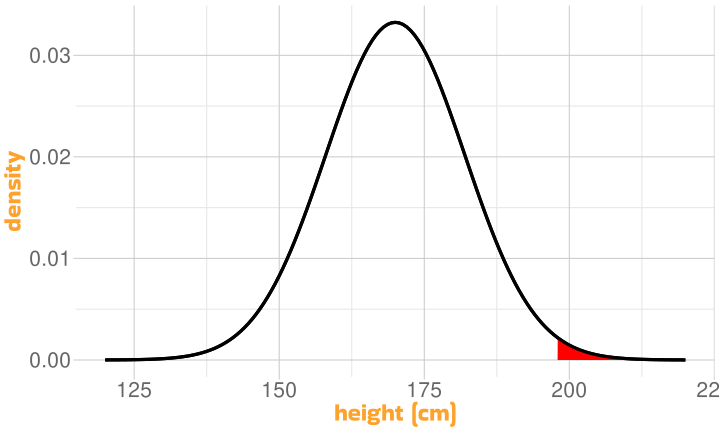
Area under the Curve
Tailedness
- we kind of knew that Casper was tall
- it made sense to ask what the likelihood of finding someone 198 cm or greater was
- this is called a one-tailed hypothesis (we’re not expecting Casper to be well below average height!)
Tailedness (2)
- often our hypothesis might be vaguer
- we expect Casper to be “different”, but we’re not sure how
- we can capture this using a two-tailed hypothesis
So: Is Casper Special?
how surprised should we be that Casper is 198 cm tall?
given the population he’s in, the probability that he’s 28cm or more taller than the mean of 170 is .0098
- NB., this is according to a one-tailed hypothesis
- a more accurate way of saying this is that .0098 is the probability of selecting him (or someone even taller than him) from our population at random
A Judgement Call
- if a 1% probability is small enough
- if a 1% chance doesn’t impress us much
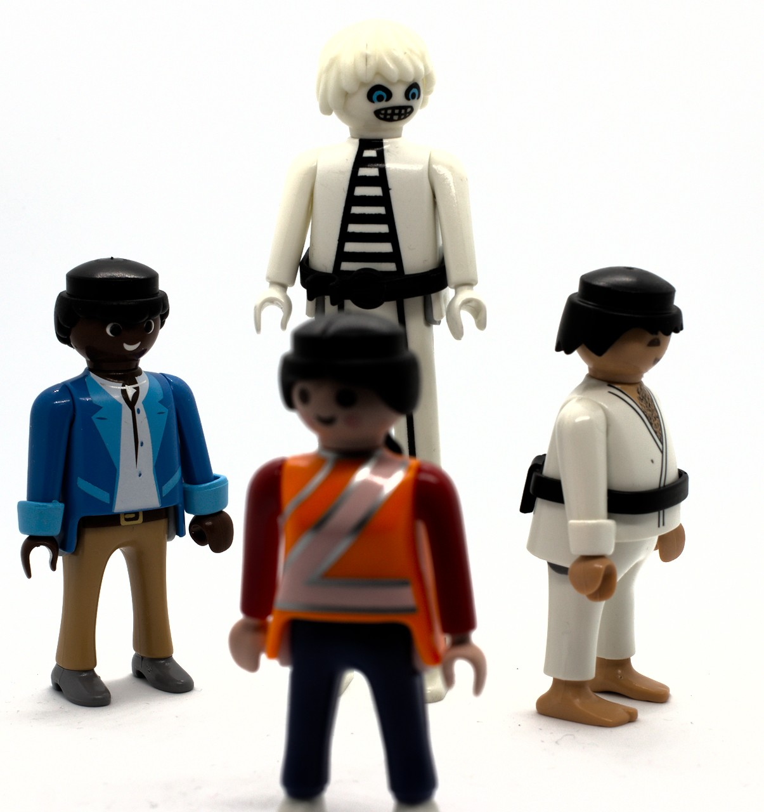
- in either case, we have nothing (mathematical) to say about the reasons for Casper’s height
Group Means
Investment Strategies
The Playmo Investors’ Circle have been pursuing a special investment strategy over the past year. By no means everyone has made a profit. Is the strategy worth advertising to others?
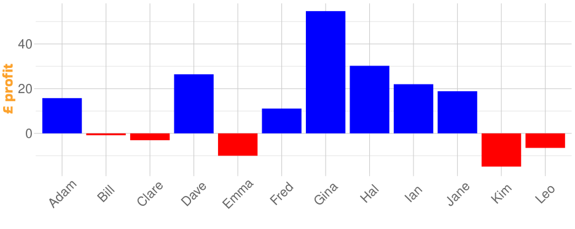About the Investments
there are 12 investors
the mean profit is £11.98
the standard deviation is £20.14
the standard error is \(\sigma/\sqrt{12}\) which is 5.8148
- we are interested in the probability of 12 people (from the same population) making at least a mean £11.98 profit
Using Standard Error
together with the mean, the standard error describes a normal distribution
“likely distribution of means for other samples of 12”
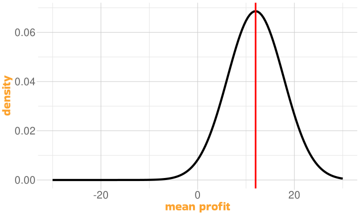
Using Standard Error (2)
last time, our null hypothesis (“most likely outcome”) was “Casper is of average height”
this time, our null hypothesis is “there was no profit”
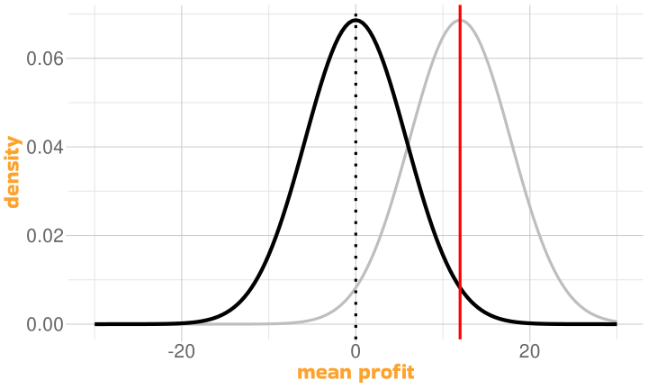
easiest way to operationalize this:
- “the average profit was zero”
so redraw the normal curve with the same standard error and a mean of zero
Using Standard Error (3)
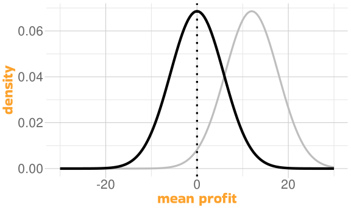
the curve we would obtain if nothing of interest had happened in a world which was as variable as the one we measured
Using Standard Error (4)
The Standardized Version
- last week we talked about the standard normal curve
- mean = 0; standard deviation = 1
\[z_i = \frac{x_i - \bar{x}}{\sigma}\]
our investors’ curve is very easy to transform
subtract 0; divide by standard error
The Standardized Version (2)
mean(profit)/se= 2.06- “number of standard errors from zero”
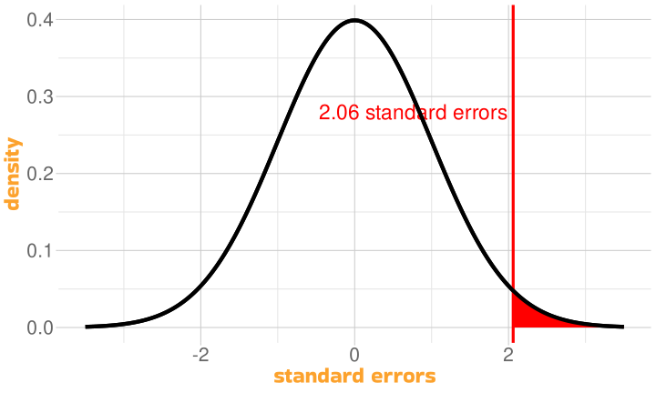
you can take any mean, and any standard deviation, and produce “number of standard errors from zero”
\(z=\bar{x}/\sigma\)
The Standard Normal Curve
\(z=\bar{x}/\sigma\)
the point of the calculation is to compare to the standard normal curve
made “looking up probability” easier in the days of printed tables
usual practice is to refer to standardised statistics
- the name chosen for them comes from the relevant distribution
\(z\) is assessed using the normal distribution
Which Means…
- for \(z=2.06\), \(p=.0197\)
if you picked 12 people at random from the population of investors we sampled from, and the population were making no profit overall, there would be, roughly, a 2% chance that the 12 would have an average profit of £11.98 or more
is 2% low enough for you to believe that our investors’ mean profit wasn’t due to chance?
again, it’s a judgement call
but before we make that judgement…
The \(t\)-test
A Small Confession
part 2 wasn’t entirely true
all of the principles are correct, but for smaller \(n\) the normal curve isn’t the best estimate
for that we use the \(t\) distribution
The \(t\) Distribution

“A. Student”, or William Sealy Gossett
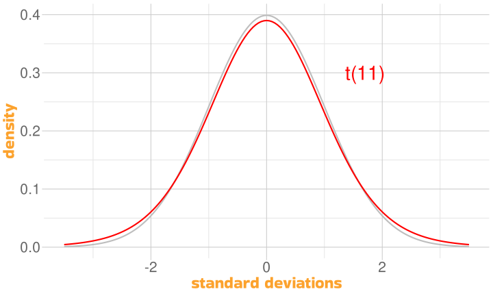
- the shape changes according to degrees of freedom, hence \(t(11)\)
The \(t\) Distribution
conceptually, the \(t\) distribution increases uncertainty when the sample is small
- the probability of more extreme values is slightly higher
exact shape of distribution depends on sample size
the degrees of freedom are inherited from the standard error
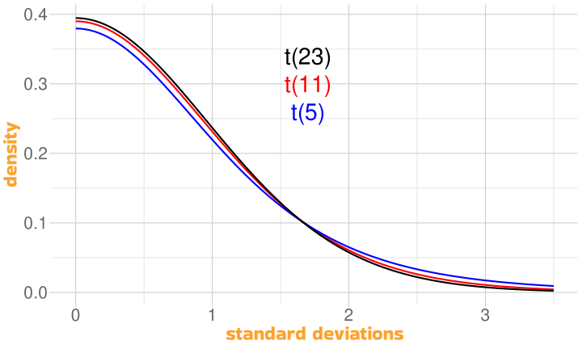
\[ \textrm{se} = \frac{\sigma}{\sqrt{n}} = \frac{\sqrt{\frac{\sum{(\bar{x}-x)^2}}{\color{red}{n-1}}}}{\sqrt{n}} \]
Using the \(t\) Distribution
in part 2,mean profit was £11.98; standard error was 5.8148
we used the formula \(z=\bar{x}/\sigma\) to calculate \(z\), and the standard normal curve to calculate probability
the formula for \(t\) is the same as the formula for \(z\)
what differs is the distribution we are using to calculate probability
we need to know the degrees of freedom (to get the right \(t\)-curve)
so \(t(\textrm{df}) = \bar{x}/\sigma\)
\(t\) and Probability
for 12 people who made a mean profit of £11.98 with an se of 5.8148
\(t(11) = 11.98/5.8148 = 2.0603\)
instead of
pnorm()we usept()for the \(t\) distributionpt()requires the degrees of freedom
the chance that 12 random investors from our population show a mean profit of £11.98 or more is actually around 3%
Did We Have to Do All That Work?
one-sample \(t\)-test
compares a single sample against a hypothetical mean (
mu)- usually zero
Types of Hypothesis
note the use of
alternative = "greater"we’ve talked about the null hypothesis (also H0)
- there is no profit (mean profit = 0)
the alternative hypothesis (H1, experimental hypothesis) is the hypothesis we’re interested in
- here, that the profit is reliably £11.98 or more (one-tailed hypothesis)
could also use
alternative = "less"oralternative = "two.sided"
Experiments Involve Differences
- but of course “profit” is a difference between paired samples
| before | after | profit |
|---|---|---|
| £362.68 | £378.44 | £15.76 |
| £370.28 | £369.45 | −£0.83 |
| £165.38 | £162.31 | −£3.07 |
| £633.64 | £660.07 | £26.43 |
| £579.65 | £569.65 | −£10.00 |
| £314.22 | £325.31 | £11.09 |
Equivalent \(t\)-tests
Putting it Together
- for \(t(11)=2.0603\), \(p=.0319\)
if you picked 12 people at random from the population of investors we sampled from, and the population were making no profit overall, there would be, roughly, a 3% chance that the 12 would have an average profit of £11.98 or more
is 3% low enough for you to believe that the mean profit wasn’t due to chance?
perhaps we’d better face up to this question!
Setting the Alpha Level
the \(\alpha\) level is a criterion for \(p\)
if \(p\) is lower than the \(\alpha\) level
we can (decide to) reject H0
we can (implicitly) accept H1
what we set \(\alpha\) to is a matter of convention
typically, in Psychology, \(\color{red}{\alpha}\) is set to .05
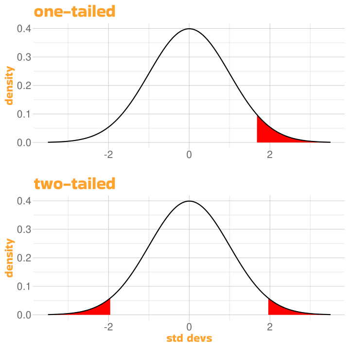
- important to set before any statistical analysis
\(p < .05\)
the \(p\)-value is the probability of finding our results under H0, the null hypothesis
H0 is essentially “💩 happens”
\(\alpha\) is the maximum level of \(p\) at which we are prepared to conclude that H0 is false (and argue for H1)
there is a 5% probability of falsely rejecting H0
wrongly rejecting H0 (false positive) is a type 1 error
wrongly accepting H0 (false negative) is a type 2 error